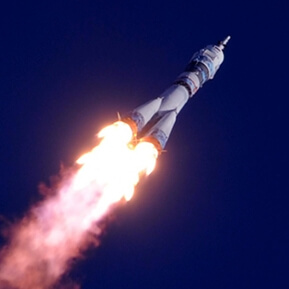
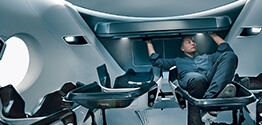

10,7%
массы Земли (ваш вес будет в 3 раза меньше, чем на Земле)
2
спутника вместо Луны (как картошка, только больше)
21 км
высота самой высокой горы Марса.
+20
максимальная температура на поверхности
Марс. Вспомнить всё
Что такое Марс?
Планета Солнечной системы, названа в честь Марса — древнеримского бога войны. Иногда Марс называют «красной планетой»
из-за красного оттенка поверхности, придаваемого ей оксидом железа.
Особенности планеты — наличие слабой атмосферы, состоящей в основном из углекислого газа, времена года, пылевые бури, сильная эррозия почв.
Где это? Как туда доехать?
Расстояние до Марса — почти 56 миллионов километров. Чтобы преодолеть такое расстояние, нужно лететь на межпланетном корабле 7-8 месяцев.
От идеи до реализации
Илон Маск. Гений или безумец?
Канадско-американский инженер, предприниматель, изобретатель и инвестор; миллиардер. Основатель компаний SpaceX и X.com,
позже переименованной в PayPal. Планирует потратить большую часть накоплений на реализацию своей мечты, а также мечты многих тысяч романтиков,
писателей, учёных: создать внеземную цивилизацию.
Мы должны сделать эту мечту реальностью за наше время жизни. Любой человек, который пожелает отправиться на Марс,
должен иметь такую возможность
— заявил Маск на Международной астронавтической конференции в Гвадалахаре (Мексика). Он обосновал необходимость своего проекта вопросом выживания человечества,
которое для своего сохранения должно стать «космическим видом».
Илон поставил перед собой цель: сократить стоимость вывода кораблей в космос в 10 раз, что станет первым шагом для человечества в освоении Марса.
Стоимость перелёта

Высадка двоих астронавтов на Луну обошлась США в 20 млрд. долларов. Маск стремится сократить эту цифру в 20 000 раз, что составит 500 000 долларов на человека.
Чем отличаются Земля и Марс? Какие условия встретят новых поселенцев?
Марс холодная и засушливая планета, на которой есть своя атмосфера, на 96% состоящая из углекислых газов, а минимальная температура опускается до -140 градусов по Цельсию.
Каждый год по весне на планете случаются пылевые бури, длящиеся от нескольких часов до нескольких месяцев.
На планете отсутствует магнитное поле, поэтому радиационный фон повышен. А низкая гравитация при длитеьном пребывании на Марсе сделает возвращение на Землю невозможным.
Полёт на Марс — билет в один конец с целью создать новую цивилизацию.
Стрелка-индикатор
Готовы ли технологии?
Одной из основных проблем экспедиций (как к Луне, так и к Марсу) являлась разработка сверхтяжелой ракеты-носителя для вывода на орбиту космического корабля (или его элементов).
В СССР в 1960-х годах велась разработка такой ракеты — Н-1. После проигрыша «лунной гонки» в конце 1960-х было понятно,
что необходимо ставить новые задачи, и в числе приоритетов вновь рассматривался полёт на Марс.
В 1969 года (после первой американской высадки на Луну) появился приказ № 232 министра общего машиностроения С. А. Афанасьева о разработке проекта «Аэлита». Полет 5-ти людей на Марс был заявлен на 1985 год[2].
Однако в 1974 году программа разработки Н-1 была закрыта, а вместе с ней была завершена разработка экспедиции на Марс.
Стрелка-индикатор
Путешествие на грани фантастики
Проект безвозвратного направления людей на Марс с целью колонизации планеты. Проект разрабатывает с 2010 года Исследовательский центр имени Эймса — одна из основных научных лабораторий НАСА.
Основная идея проекта состоит в том, чтобы отправлять людей на Марс безвозвратно. Это приведёт к значительному сокращению стоимости полёта, появится возможность взять больше груза и людей.
Первых марсовиков планируется отправить к красной планете уже в 2030 году. Группа учёных или астронавты, доставленные на Марс вместе с высокотехнологичной аппаратурой и небольшим ядерным реактором,
смогут производить кислород, воду и пищу. Каждые два года, когда Марс будет оказываться на нужной орбите, НАСА сможет пополнять запасы поселенцев и доставлять новых астронавтов.
Стрелка-индикатор
Жизнь на Марсе
На Красной планете отчасти представляют опасность песчаные бури, возникающие из-за большого колебания давления (до 10 %), механизмы изменения которого ещё точно не понятны.
Ввиду отсутствия метеорологического спутника, предупреждения о бурях невозможно сделать за достаточное время до их начала.
Наконец другие погодные явления, как и свойства грунта планеты, полностью не изучены. Марсианская пыль хоть и менее абразивна, чем лунная,
но всё равно может отрицательно сказаться на здоровье космонавтов при попадании в лёгкие. Из-за очень малого размера частиц от неё очень трудно изолироваться.
Так космонавты программы «Аполлон» на следующий же день замечали присутствие пыли в спускаемом аппарате. Кроме того, марсианская пыль содержит 0,2 % хрома.
Многие соединения хрома не опасны, но есть вероятность присутствия солей хромовой кислоты, которые являются сильными канцерогенами.
Организация жизни в колонии

Проживание
В основе жилых помещений лежат надувные компоненты — спальня, рабочая зона, гостиная, парник для выращивания зелени — 50 м2 на человека.
Благодаря этим компонентам, колонисты смогут принять душ, приготовить свежую пищу, носить обычную одежду. Весь комплекс соединен сетью ходов.
В основе жилых помещений лежат надувные компоненты — спальня, рабочая зона, гостиная, парник для выращивания зелени — 50 м2 на человека.
Благодаря этим компонентам, колонисты смогут принять душ, приготовить свежую пищу, носить обычную одежду. Весь комплекс соединен сетью ходов.
В основе жилых помещений лежат надувные компоненты — спальня, рабочая зона, гостиная, парник для выращивания зелени — 50 м2 на человека.
Благодаря этим компонентам, колонисты смогут принять душ, приготовить свежую пищу, носить обычную одежду. Весь комплекс соединен сетью ходов.
В основе жилых помещений лежат надувные компоненты — спальня, рабочая зона, гостиная, парник для выращивания зелени — 50 м2 на человека.
Благодаря этим компонентам, колонисты смогут принять душ, приготовить свежую пищу, носить обычную одежду. Весь комплекс соединен сетью ходов.
В основе жилых помещений лежат надувные компоненты — спальня, рабочая зона, гостиная, парник для выращивания зелени — 50 м2 на человека.
Благодаря этим компонентам, колонисты смогут принять душ, приготовить свежую пищу, носить обычную одежду. Весь комплекс соединен сетью ходов.